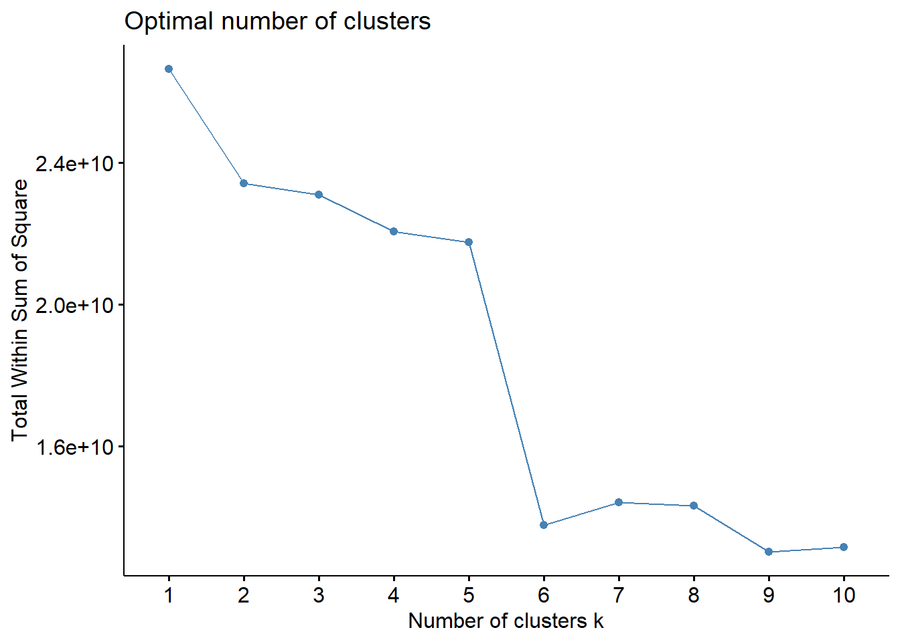

library(tidyverse)
library(dplyr)
library(GGally)
library(psych)
library(skimr)
library(fmsb)
library(mvnormtest)
library(car)
library(nortest)
library(fBasics)
library(ggplot2)
library(factoextra)
library(stats)
library(cluster)
library(NbClust)
library(ggrepel)Clustering
Recordatorio
Vamos a tratar una base de datos relacionados con la predicción de riesgo de cirrosis. La cirrosis es una etapa tardía de la cicatrización (fibrosis) del hígado causada por muchas formas de enfermedades y afecciones hepáticas, como la hepatitis y el alcoholismo crónico.
Nuestro objetivo para este estudio sería estudiar algunos perfiles con riesgo de padecer cirrosis.
Los datos provienen de la página web Kaggle: Kaggle - Cirrhosis.
Recordemos nuestra tabla de datos:
datos <- read.table("cirrosis_tidy.csv", header = TRUE )
datos = datos %>% mutate(Ascites = Ascites %>% as.factor,
Hepatomegaly = Hepatomegaly %>% as.factor,
Spiders = Spiders %>% as.factor,
Edema = Edema %>% as.factor,
Stage = Stage %>% as.factor,
Drug = Drug %>% as.factor,
Sex = Sex %>% as.factor,
Status = Status %>% as.factor)
glimpse(datos)Rows: 276
Columns: 20
$ ID <int> 1, 2, 3, 4, 5, 7, 8, 9, 10, 11, 12, 13, 15, 16, 17, 18, …
$ N_Days <int> 400, 4500, 1012, 1925, 1504, 1832, 2466, 2400, 51, 3762,…
$ Status <fct> Muerto, Cens, Muerto, Muerto, Cens_Trat, Cens, Muerto, M…
$ Drug <fct> D-penicillamine, D-penicillamine, D-penicillamine, D-pen…
$ Age <int> 21464, 20617, 25594, 19994, 13918, 20284, 19379, 15526, …
$ Sex <fct> Female, Female, Male, Female, Female, Female, Female, Fe…
$ Ascites <fct> Si, No, No, No, No, No, No, No, Si, No, No, No, No, No, …
$ Hepatomegaly <fct> Si, Si, No, Si, Si, Si, No, No, No, Si, No, No, No, No, …
$ Spiders <fct> Si, Si, No, Si, Si, No, No, Si, Si, Si, Si, No, No, No, …
$ Edema <fct> Si, No, Sin, Sin, No, No, No, No, Si, No, No, No, No, No…
$ Bilirubin <dbl> 14.5, 1.1, 1.4, 1.8, 3.4, 1.0, 0.3, 3.2, 12.6, 1.4, 3.6,…
$ Cholesterol <int> 261, 302, 176, 244, 279, 322, 280, 562, 200, 259, 236, 2…
$ Albumin <dbl> 2.60, 4.14, 3.48, 2.54, 3.53, 4.09, 4.00, 3.08, 2.74, 4.…
$ Copper <int> 156, 54, 210, 64, 143, 52, 52, 79, 140, 46, 94, 40, 173,…
$ Alk_Phos <dbl> 1718.0, 7394.8, 516.0, 6121.8, 671.0, 824.0, 4651.2, 227…
$ SGOT <dbl> 137.95, 113.52, 96.10, 60.63, 113.15, 60.45, 28.38, 144.…
$ Tryglicerides <int> 172, 88, 55, 92, 72, 213, 189, 88, 143, 79, 95, 130, 96,…
$ Platelets <int> 190, 221, 151, 183, 136, 204, 373, 251, 302, 258, 71, 24…
$ Prothrombin <dbl> 12.2, 10.6, 12.0, 10.3, 10.9, 9.7, 11.0, 11.0, 11.5, 12.…
$ Stage <fct> 4, 3, 4, 4, 3, 3, 3, 2, 4, 4, 4, 3, 3, 3, 4, 4, 3, 4, 4,…El tibble resultante consta de 276 observaciones y 20 variables. Cada muestra representa un paciente al que se le ha extraido la siguiente información:
ID: Identificador únicoN_Days: Número de días entre el registro y la fecha de defunción, transplante o estudio analítico en Julio de 1986.Status: Estatus del paciente: C (Censurado), CL (censurado debido a tratamiento hepático), o D (Muerto)Drug: Tipo de fármaco: D-penicilamina o placeboAge: Edad [días]Sex: Sexo cromosómico: Male (hombre) o Female (Mujer)Ascites: Presencia de Ascitis: No o SiHepatomegaly: Presencia de Hepatomegalia: No o SiSpiders: Presencia de arañas vasculares: No o SiEdema: Presencia de Edema: No (no hay edema y sin tratamiento diurético para el edema), Sin (presencia de edema sin diuréticos, o edema curado con diuréticos), o Si (edema a pesar del tratamiento con diuréticos)Bilirubin: Bilirrubina sérica [mg/dl]Cholesterol: Colesterol sérico [mg/dl]Albumin: Albúmina [g/dl]Copper: Cobre en orina [ug/day]Alk_Phos: Fosfatasa alcalina [U/liter]SGOT: SGOT [U/ml]Triglycerides: Triglicéridos [mg/dl]Platelets: Plaquetas por cúbico [ml/1000]Prothrombin: Tiempo de Protrombina [s]Stage: Estado histórico de la enfermedad (1, 2, 3, or 4)
Resumen numérico de las variables
- Datos cuantitativos:
Unidad Media Desv Minimo Maximo Rango
N_Days Días 1979.167 1112.380 41.00 4556.00 4515.00
Age Días 18189.326 3843.556 9598.00 28650.00 19052.00
Bilirubin mg/dl 3.334 4.601 0.30 28.00 27.70
Cholesterol mg/dl 371.261 234.788 120.00 1775.00 1655.00
Albumin g/dl 3.517 0.405 1.96 4.40 2.44
Copper ug/día 100.768 88.269 4.00 588.00 584.00
Alk_Phos U/l 1996.612 2115.478 289.00 13862.40 13573.40
SGOT U/ml 124.119 56.720 28.38 457.25 428.87
Tryglicerides mg/dl 124.978 65.281 33.00 598.00 565.00
Platelets ml/1000 261.772 93.129 62.00 563.00 501.00
Prothrombin s 10.736 1.008 9.00 17.10 8.10- Datos cualitativos:
Status Drug Sex Ascites Hepatomegaly
Cens :147 D-penicillamine:136 Female:242 No:257 No:134
Cens_Trat: 18 Placebo :140 Male : 34 Si: 19 Si:142
Muerto :111
Spiders Edema Stage
No:196 No :234 1: 12
Si: 80 Si : 17 2: 59
Sin: 25 3:111
4: 94 Análisis de normalidad multivariante
Con estos datos vamos a realizar nuestro estudio de normalidad multivariante.
Calculemos el vector de medias
y la distancia de Mahalanobis:
d_Mahalanobis = apply(datos_quant, MARGIN = 1, function(x)
t(x - Medias)%*%solve(S)%*%(x - Medias))Una vez calculadas estas medidas, representemos los datos

Notemos que no sigue una Chi-cuadrado, i por tanto los datos tampoco siguen una normal multivariante.
Vamos a realizar un test de normalidad para confirmarlo. Utilizaremos Shapiro-Wilk:
mvnormtest::mshapiro.test(t(datos_quant))
Shapiro-Wilk normality test
data: Z
W = 0.83366, p-value < 2.2e-16Obtenemos un p-valor muy pequeño, prácticamente 0, entonces, rechazamos la hipótesis nula y concluimos que no hay normalidad multivariante, es decir, almenos una variable individual no se distribuye normalmente.
Clustering
Vamos a guardar en un nuevo dataset las variables cuantitativas. Vamos a tipificar o escalar nuestros datos para que esten todos a la misma escala:
datos2 <- datos_quant %>% scale()A continuación, vamos a centrar los datos:
n <- dim(datos2)[1]
X <- as.matrix(datos2)
Hn <- diag(n)-1/n # matriz de centrado
cX <- Hn%*%X # matriz centradaVamos a representar la matriz de distancia, utilizando distancia euclidea.
mat_dist <- dist(x = cX, method = "euclidean")fviz_dist(dist.obj = mat_dist, lab_size = 5) +
theme(legend.position = "none")
K-means
En nuestro caso, no sabemos en cuantos clusters o grupos esta dividido nuestro dataset. Por tanto, vamos a estimar al número \(k\) óptimo para aplicar el método de k-means. Para ello, utilizaremos la función fviz_nbclust():
fviz_nbclust(x = cX, FUNcluster = kmeans, method = "wss",
diss = dist(cX, method = "euclidean"))+
geom_vline(xintercept = 4, linetype = 2)
El método del codo nos sugiere considerar 4 clusters, aunque no sea demasiado clara la decisión. De todas formas, otro motivo para considerar 4 es para poder comparar con la variable Stage que tiene 4 niveles.
Calculamos los 4 centroides:
set.seed(232)
km_clusters_4 <- kmeans(x = cX, centers = 4, nstart = 70)Ahora bien, representemos dichos clústers en el plano. Como nuestro número de variables (dimensionalidad) es mayor de 2, automáticamente realiza un PCA y representa las dos primeras componentes principales (Dim1 y Dim2).
fviz_cluster(object = km_clusters_4, data = cX, show.clust.cent = TRUE, geom ="point",
ellipse.type = "euclid", star.plot = TRUE, repel = TRUE, palette = c("#FF7078", "#F39B4C", "#7FBFF5", "#A298E8")) +
theme_bw() +
theme(legend.position = "right")
Como podemos ver, al menos en la proyección en \(2\) dimensiones, hay bastante solapamiento. Además, si vemos la zona pintada como si fuera un intervalo de confianza, hay muchas observaciones que quedan fuera.
En este punto, sería interesante ver si los clusters corresponden a las fases de cirrosis segun la variable stage.
Vamos a crear un data frame compuesto de \(3\) columnas: identificador del paciente, estado de la enfermedad y cluster al que pertenece, y observemos una tabla de frecuencias absolutas de cada fase de enfermedad y cada cluster:
id_stage = datos %>%
select(ID, Stage)
Cluster = km_clusters_4$cluster %>% as.factor()
tabla_cluster = cbind(id_stage, Cluster)
table(x = tabla_cluster[,c(2,3)]) Cluster
Stage 1 2 3 4
1 0 1 1 10
2 3 7 5 44
3 15 12 9 75
4 15 45 3 31Observemos que, en este caso, un kmeans con \(k=4\) no clusteriza en función del estado de cirrosis en que se encuentra el paciente.
K-medoids (PAM)
En este caso, cada cluster está representado por una observación presente en el cluster (medoid), mientras que en K-means cada cluster está representado por su centroide, que se corresponde con el promedio de todas las observaciones del cluster pero con ninguna en particular. Vamos a utilizar la distancia de Manhattaan ya que es menos sensible a outliers.
fviz_nbclust(x = cX, FUNcluster = pam, method = "wss",
diss = dist(datos, method = "manhattan"))
Encontramos codos en \(k=2\), \(k=4\) y uno muy pronunciado en \(k=6\). Para ver cual sería óptimo, visualicemos otros métodos como el de la silueta y gap_stat.
fviz_nbclust(x = cX, FUNcluster = pam, method = "silhouette",
diss = dist(datos, method = "manhattan"))
fviz_nbclust(x = cX, FUNcluster = pam, method = "gap_stat",
diss = dist(datos, method = "manhattan"))Estos dos métodos nos sugieren \(2\) clusters para realizar el análisis. En nuestro contexto, tiene más sentido utilizar 2, así que calculamos los medoides:
pam_clusters <- pam(x = cX, k = 2, metric = "manhattan")
fviz_cluster(object = pam_clusters, data = cX, ellipse.type = "t", geom = "point", repel =TRUE) +
theme_bw() +
theme(legend.position = "right")
Estan bastante solapados, puede deberse a la proyección a dos dimensiones.
Realicemos k-medoids con \(k=4\) para comparar con la variable stage:
pam_clusters_4 <- pam(x = cX, k = 4, metric = "manhattan")
fviz_cluster(object = pam_clusters_4, data = cX, ellipse.type = "t", geom = "point", repel =TRUE) +
theme_bw() +
theme(legend.position = "right")
id_stage = datos %>%
select(ID, Stage)
Cluster_medoid = pam_clusters_4$clustering %>% as.factor()
tabla_cluster = cbind(id_stage, Cluster_medoid)
table(x = tabla_cluster[,c(2,3)]) Cluster_medoid
Stage 1 2 3 4
1 0 8 3 1
2 8 28 22 1
3 17 46 34 14
4 46 24 17 7Observemos que, en este caso, un k-medoids con \(k=4\) tampoco clusteriza en función del estado de cirrosis en que se encuentra el paciente.
Clara
Este método combina los dos anteriores. dividiendo a partes iguales el conjunto de observaciones y aplicando PAM a cada una de las partes para identificar los medoids. Calcula la suma total de las distancias entre cada observación y su correspondiente medoid y seleccionaa como clustering final aquel que ha conseguido menor suma total de distancias intra-clusters.
Como en los casos anteirores han salido que \(k=2, 4\) eran los óptimos, realicemos Clara con estos valores de \(k\):
clara_clusters_2 <- clara(x = cX, k = 2, metric = "manhattan", stand = TRUE,
samples = 50, pamLike = TRUE)
fviz_cluster(object = clara_clusters_2, ellipse.type = "t", geom = "point") +
theme_bw() +
theme(legend.position = "right")
clara_clusters_4 <- clara(x = cX, k = 4, metric = "manhattan", stand = TRUE,
samples = 50, pamLike = TRUE)
fviz_cluster(object = clara_clusters_4, ellipse.type = "t", geom = "point") +
theme_bw() +
theme(legend.position = "right")
Observemos que los resultados son bastante parecidos que en k-means y k-medoids.
Comprobemos si la clusterización en \(4\) grupos es semejante a la de la variable stage
id_stage = datos %>%
select(ID, Stage)
Cluster_clara = clara_clusters_4$clustering %>% as.factor()
tabla_cluster = cbind(id_stage, Cluster_clara)
table(x = tabla_cluster[,c(2,3)]) Cluster_clara
Stage 1 2 3 4
1 0 8 3 1
2 2 28 27 2
3 3 53 38 17
4 34 28 23 9Observemos que el método Clara con \(k=4\) tampoco clusteriza en función de la fase de cirrosis en que se encuentra el paciente.
Dendograma
Por útimo, realicemos un dendograma para ver como se van formando los clusters, con el algoritmo agglomerative hierarchical clustering.
Como sabemos, existen diferentes tipos de dendogramas en función del tipo de distancia entre cluster que se escoja. Recordemos cuales son:
Complete or Maximum: Se calcula la distancia entre todos los posibles pares formados por una observación del cluster A y una del cluster B. La mayor de todas ellas se selecciona como la distancia entre los dos clusters.
Single or Minimum: Se calcula la distancia entre todos los posibles pares formados por una observación del cluster A y una del cluster B. La menor de todas ellas se selecciona como la distancia entre los dos clusters.
Average: Se calcula la distancia entre todos los posibles pares formados por una observación del cluster A y una del cluster B. El valor promedio de todas ellas se selecciona como la distancia entre los dos clusters.
Centroid: Se calcula el centroide de cada uno de los clusters y se selecciona la distancia entre ellos como la distancia entre los dos clusters.
Ward: Se trata de un método general. La selección del par de clusters que se combinan en cada paso del agglomerative hierarchical clustering se basa en el valor óptimo de una función objetivo, pudiendo ser esta última cualquier función definida por el analista. Un caso particular es Ward’s minimum variance, en cada paso se identifican aquellos 2 clusters cuya fusión conlleva menor incremento de la varianza total intra-cluster.
Dendograma para \(4\) clusters con distancia entre clusters Complete or Maximum:
hc_completo <- mat_dist %>%
hclust(method = "complete") # Complete or Maximum
fviz_dend(x = hc_completo, k = 4, cex = 0.6) +
geom_hline(yintercept = 11.2, linetype = "dashed") +
geom_hline(yintercept = 9.6, linetype = "dashed")- Dendograma para \(4\) clusters con distancia entre clusters Single or Minimum:
hc_single <- mat_dist %>%
hclust(method = "single") # Single or Minimum
fviz_dend(x = hc_single, k = 4, cex = 0.6) +
geom_hline(yintercept = 5.9, linetype = "dashed")+
geom_hline(yintercept = 5.1, linetype = "dashed")
- Dendograma para \(4\) clusters con distancia entre clusters Average:
hc_average <- mat_dist %>%
hclust(method = "average") # Average
fviz_dend(x = hc_average, k = 4, cex = 0.6) +
geom_hline(yintercept = 8.8, linetype = "dashed")+
geom_hline(yintercept = 7, linetype = "dashed")- Dendograma para \(4\) clusters con distancia entre clusters Ward’s minimum variance:
hc_ward_D2 <- mat_dist %>%
hclust(method = "ward.D2") # Ward's minimum variance
fviz_dend(x = hc_ward_D2, k = 4, cex = 0.6) +
geom_hline(yintercept = 25, linetype = "dashed")+
geom_hline(yintercept = 18, linetype = "dashed")
Observemos que, al tener muchas observaciones, no podemos distinguirlas. Aun así nos podemos hacer una idea del tamaño de cada cluster.
Observamos que, en nuestros datos, los clusters que se forman dependen mucho de la distancia entre clusters que se escoja. Esto puede indicar que los datos no esten distribuidos en grupos bien diferenciados.
Observamos que si cortamos más arriba el dendograma (la línea más alta), podemos ver cuales son los clusters que se juntan si quisiéramos solo \(2\) clusters.
Una vez calculados los dendogramas, hay que comprobar que la estructura preserva bien las distancias originales entre las observaciones. Para hacerlo usemos el coeficiente de correlación entre las distancias cophenetic del dendrograma y la matriz de distancias original. Cuanto más cercano a 1 sea el valor, mejor refleja el dendograma las distancias originales.
cor(x = mat_dist, cophenetic(hc_completo))
cor(x = mat_dist, cophenetic(hc_single))
cor(x = mat_dist, cophenetic(hc_average))
cor(x = mat_dist, cophenetic(hc_ward_D2))[1] 0.6545671
[1] 0.8451853
[1] 0.8300136
[1] 0.5109195- Observamos que las distancias Single or Minimum y Average preservan mejor las distancias entre observaciones, en cambio Ward’s minimum variance en nuestro caso no es recomendable usarla.
Análisis de Componentes Principales
Calculamos las componentes principales con el comando prcomp utilizando nuestro dataset, escalando los datos y centrados.
datos.acp=prcomp(datos_quant, scale = TRUE, center = TRUE)Los valores propios muestran el porcentaje de varianza explicada por cada componente principal.
eigenvalue variance.percent cumulative.variance.percent
Dim.1 2.88813 26.25575 26.25575
Dim.2 1.74439 15.85808 42.11383
Dim.3 1.12545 10.23139 52.34522
Dim.4 0.96744 8.79488 61.14010
Dim.5 0.84138 7.64895 68.78905
Dim.6 0.79369 7.21540 76.00445
Dim.7 0.70646 6.42232 82.42677
Dim.8 0.63293 5.75392 88.18069
Dim.9 0.52599 4.78173 92.96242
Dim.10 0.44467 4.04246 97.00489
Dim.11 0.32946 2.99511 100.00000
Efectivamente, viendo el gráfico y utilizando el criterio del codo, nos quedaremos con \(2\) o \(3\) componentes principales. Pero como trabajamos junto a clusters, y estos están representados sobre 2 CPs, consideraremos solo las dos primeras componentes principales.
Realicemos un gráfico de círculo de correlación variable para ver como se agrupan las variables y la calidad de representación que tienen.

Para corroborar numéricamente la calidad de representación, realizaremos un gráfico de cos2.
Efectivamente, las dos primeras variables tienen un cos2 alto, por tanto estas bien representadas. En cambio, las otras variables tienen un valor de cos2 más bajo, indicando que estas variables no están tan bien representadas por las componentes principales.
Para ver como se relacionan las componentes principales con los datos originales, veamos los autovectores.
PC1 PC2
N_Days 0.3585 -0.2066
Age -0.1023 0.4465
Bilirubin -0.4919 -0.0652
Cholesterol -0.2640 -0.4403
Albumin 0.3257 -0.2734
Copper -0.3962 0.0226
Alk_Phos -0.1544 -0.2527
SGOT -0.3326 -0.2131
Tryglicerides -0.3010 -0.2445
Platelets 0.0885 -0.4649
Prothrombin -0.2311 0.3154Observemos que la primera componente principal da un peso muy elevado y negativo a la variable Bilirubin.
Respecto a la segunda componente principal, representa sobretodo a Platelets, a Age y a Cholesterol.
Ahora, vamos a realizar un biplot, que nos permitirá visualizar las variables originales y las observaciones transformadas en los ejes de componentes principales.

Resultados por Variables
Empezamos por las contribuciones de las variables a las primeras dos componentes principales.
Dim.1 Dim.2
N_Days 12.8548 4.2688
Age 1.0475 19.9320
Bilirubin 24.1993 0.4249
Cholesterol 6.9682 19.3881
Albumin 10.6081 7.4756
Copper 15.6967 0.0509
Alk_Phos 2.3828 6.3843
SGOT 11.0622 4.5399
Tryglicerides 9.0575 5.9798
Platelets 0.7828 21.6108
Prothrombin 5.3400 9.9449Tambien apreciamos la calidad de representación de las variables a las componentes principales.
Dim.1 Dim.2
N_Days 0.37126 0.07446
Age 0.03025 0.34769
Bilirubin 0.69891 0.00741
Cholesterol 0.20125 0.33820
Albumin 0.30638 0.13040
Copper 0.45334 0.00089
Alk_Phos 0.06882 0.11137
SGOT 0.31949 0.07919
Tryglicerides 0.26159 0.10431
Platelets 0.02261 0.37698
Prothrombin 0.15423 0.17348Hemos podido comprobar lo expuesto anteriormente:
Se aprecia una important contribución de la variable
Bilirubina la primera componente principal, además de una muy buena representación (un valor de cos2 muy elevado).Seguidamente, la variable
Platelets,AgeyCholesteroltiene gran contribución a la segunda componente principal.Observemos que la variable
Cholesterol, a pesar de ser la tercera variable mejor representada por la segunda componente principal, es la que mejor (de entre estas tres) está representa en conjunto con la CP1 y la CP2.
Cluster + ACP
Pintemos ahora el mismo gráfico, pero coloreadolo en función de los clusters que se nos habían generado en k-means:
Viendo este gráfico parece que clusteriza en función de la contribución de cada muestra a las componentes principales. Como la variable Bilirubin está bien representada por la primera componente principal, es normal que un cluster (círculos rojos) sean las muestras que más aportan a ésta.
Luego están las muestras azules que corresponden a aquellas que parece que estan representadas por Cholesterol y Platelets.
A continuación, encontramos las verdes que son las que estan más representadas por Age, que era una de las variables que mejor se representaba por la segunda componente principal.
Y finalmente, encontramos el grupo lila que son las que estan mas representadas por Albumin que notemos que también contribuye bastante en la primera componente principal
Conclusiones
Usando k-means es difícil establecer un número óptimo de clusters, ya que con el método
wssera complicado establemcer un \(k\) óptimo; con el métodosilhouetteno decía que el \(k\) óptimo era \(2\); y el métodogap_statdecía \(k=8\).Usando k-medoids, el número óptimo de clusters es \(2\) usando los tres métodos.
Tanto k-means como k-medoids como Clara, con \(4\) clusters no agrupa en función de la variable
stage.Utilizando dendogramas, o clasificación jerárquica, observamos que las distancias Single or Minimum y Average preservan mejor las distancias entre observaciones, en cambio Ward’s minimum variance en nustro caso no es recomendable usarla.
En cuanto a ACP, observamos que la variable
Bilirubinestá bien representada por la primera componente principal. Seguidamente, la variablePlatelets,AgeyCholesteroltiene gran contribución a la segunda componente principal.Los clusters que se han realizado con \(k=4\) parecen estar hechos en función de la calidad de representación de las variables que más bien estan representadas por las dos primeras componentes principales.